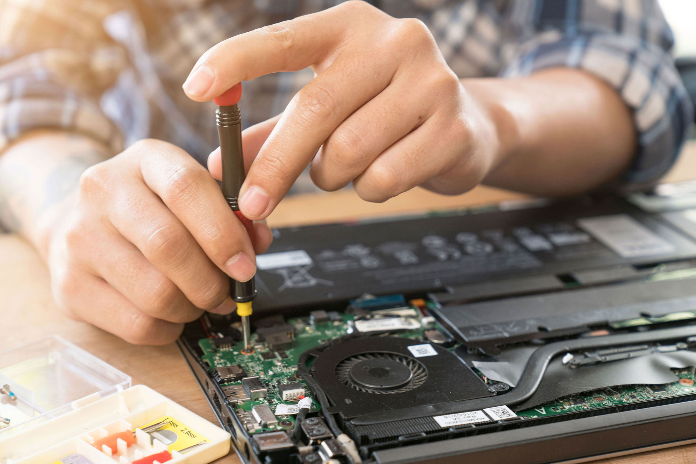

hardware
Hardware é a parte física de um computador, é formado pelos componentes eletrônicos, como por exemplo, circuitos de fios e luz, placas, utensílios, correntes, e qualquer outro material em estado físico, que seja necessário para fazer com o que computador funcione.